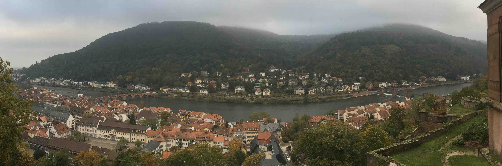

Talks

English Talks
- KEK Theory Meeting on Particle Physics Phenomenology (KEK-PH2020)
18-21 Feb. 2020, KEK
"Dynamics of Nambu monopole in two Higgs doublet models" - 25th International Summer Institute on Phenomenology of Elementary Particle Physics and Cosmology (SI209)
18-23 August 2019, Gangneung, Korea
"Stable magnetic monopole in two Higgs doublet models" - New Higgs Working Group the 25th regular meeting
11-12 May 2019, Osaka Univ., Japan
"Stable magnetic monopole in two Higgs doublet models" - Joint Kyoto/NTU HEP Workshop 2018
23-27 Nov. 2018, OIST, Japan
"Gauge invariant regularization for perturbative chiral gauge theory" - 24th International Summer Institute on Phenomenology of Elementary Particle Physics and Cosmology (SI2018)
12-17 Aug. 2018, Tianjin, China
"Gauge invariant regularization for perturbative chiral gauge theory" - Strings and Fields 2018
30 Jul. - 3 Aug. 2018, YITP
"Gauge invariant regularization for perturbative chiral gauge theory" - 2017 Kyoto NTU Workshop
24-26 Nov. 2017, National Taiwan Univ.
"Axial U(1) current in Grabowska and Kaplan’s formulation"
Japanese Talks
- 日本物理学会 2020 春季大会
Mar. 2020 (現地開催中止)
"Dynamics of Nambu monopole in two Higgs doublet models" - 日本物理学会 2019 秋季大会
17-20 Sep. 2019, 山形大学
"Stable magnetic monopole in two Higgs doublet models" - 三者若手夏の学校 2019
5-10 Aug. 2019, 白浜荘
"Stable magnetic monopole in two Higgs doublet models" - 基研研究会 素粒子物理学の進展2019 (PPP2019)
29 Jul. - 2 Aug. 2019, YITP
"Stable magnetic monopole in two Higgs doublet models" - 日本物理学会 2018 秋季大会
14-17 Sep. 2018, 信州大学
"カイラルゲージ理論のゲージ対称性を保つ正則化とU(1) アノマリー" - 基研研究会 素粒子物理学の進展2018 (PPP2018)
6-10 Aug. 2018,
"カイラルゲージ理論のゲージ対称性を保つ新しい正則化" - 関西地域セミナー2018
23 Jun. 2018, 京都大学
"カイラルゲージ理論のゲージ対称性を保つ新しい正則化について" - 日本物理学会 2018 春季大会
22-25 Mar. 2018, 東京理科大学
"摂動論的カイラルゲージ理論のゲージ対称性を保つ新しい正則化について" - 日本物理学会 2017 秋季大会
12-15 Sep. 2017, 宇都宮大学
"Axial U(1) current in Grabowska and Kaplan’s formulation" - 三者若手夏の学校 2017
21-26 Aug. 2017, 国立オリンピック記念青少年総合センター
"Axial U(1) current in Grabowska and Kaplan’s formulation" - 三者若手夏の学校 2016
31 Jul. - 5 Aug. 2016, 黒姫ライジングサンホテル
"Kaluza-Klein theories"(Review)
Seminar
- 九州大学素粒子論研究室セミナー
30 Jun. 2020
"Topological Nambu monopole in two Higgs doublet models" - 大阪大学素粒子論研究室セミナー
16 Jun. 2020
"Sphaleron from gradient flow" - 高エネルギー加速器研究機構 理論セミナー
12 May 2020
"Topological Nambu monopole in two Higgs doublet models" - Asymptotic safety seminar
23 Mar. 2020
"Scalegenesis and fermionic dark matters in the flatland scenario" - 北海道大学素粒子論研究室セミナー
6 Dec. 2019
"Stable Nambu monopole in two Higgs doublet models" - Heidelberg University Cold Quantum Coffee
22 Oct. 2019
"Stable magnetic monopole in two Higgs doublet models" - 立教大学理論物理学研究室コロキウム(素粒子)
15 Oct. 2019
"Axial U(1) current in Grabowska and Kaplan’s formulation" - 新潟大学素粒子論研究室セミナー
6 Jun. 2019
"Stable magnetic monopole in two Higgs doublet models" - 名古屋大学素粒子論研究室セミナー
13 Nov. 2018
"Gauge invariant regularization for perturbative chiral gauge theory" - 慶應義塾大学 topological science project seminar
31 Oct. 2018
"Gauge invariant regularization for perturbative chiral gauge theory" - 大阪大学素粒子論研究室セミナー
16 Oct. 2018
"Axial U(1) current in the Grabowska and Kaplan's formulation" - 奈良女子大学素粒子論研究室セミナー
20 Jul. 2018
"カイラルゲージ理論のゲージ対称性を保つ新しい正則化について" - 京産大益川塾セミナー
18 Jun. 2018
"Axial U(1) current in the Grabowska and Kaplan's formulation" - 高エネルギー加速器研究機構理論セミナー
11 Jul. 2017
"Axial U(1) current in Grabowska and Kaplan’s formulation"
Poster
- KEK Theory Meeting on Particle Physics Phenomenology (KEK-PH2018 winter) and 3rd KIAS-NCTS-KEK workshop on Particle Physics Phenomenology
4-7 Dec. 2018, KEK
"Gauge invariant regularization for perturbative chiral gauge theory"
Local Talks
- 京大素粒子論ジャーナルクラブ
18 Dec. 2019,
Review on "Electroweak Symmetric Dark Matter Balls" (arXiv:1906.10739 [hep-ph]) - 第17回関西現象論勉強会
18 Oct. 2019,京都キャンパスプラザ,
Review on "Domain Walls in QCD" and "Domain Walls and Vortices in Chiral Symmetry Breaking" - 京大素粒子論ジャーナルクラブ
10 Apr. 2019,
Review on "Electroweak Phase Transition and Baryogenesis in Composite Higgs Models" (arXiv:1804.07314 [hep-ph])
© 2020 Yu HAMADA